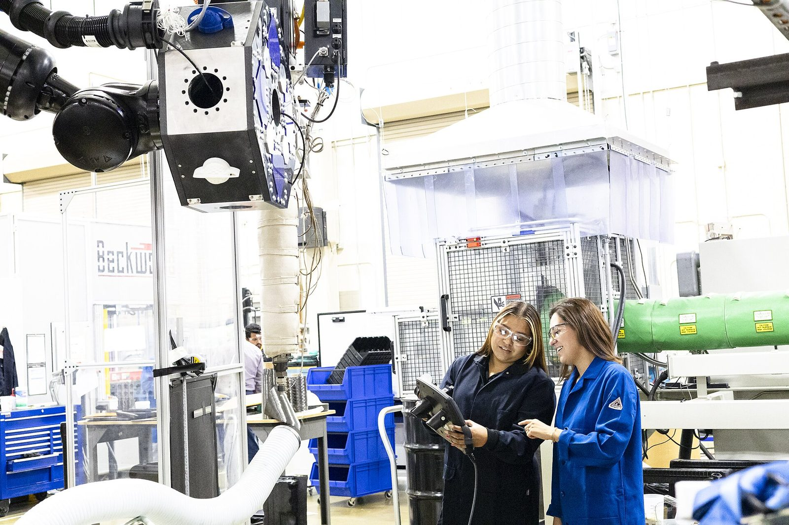
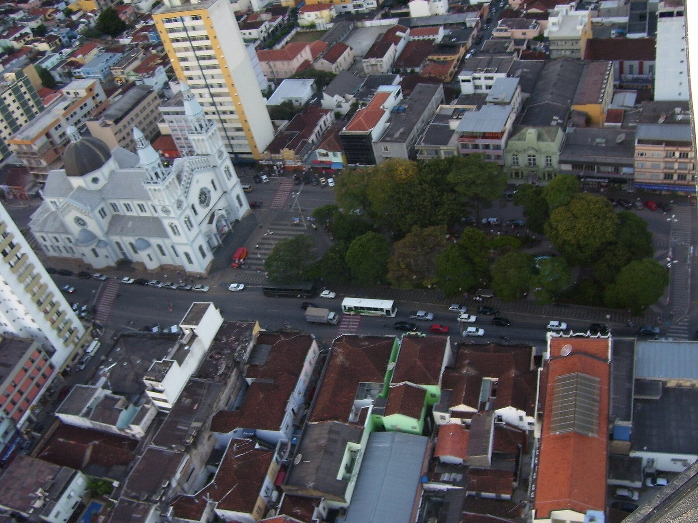
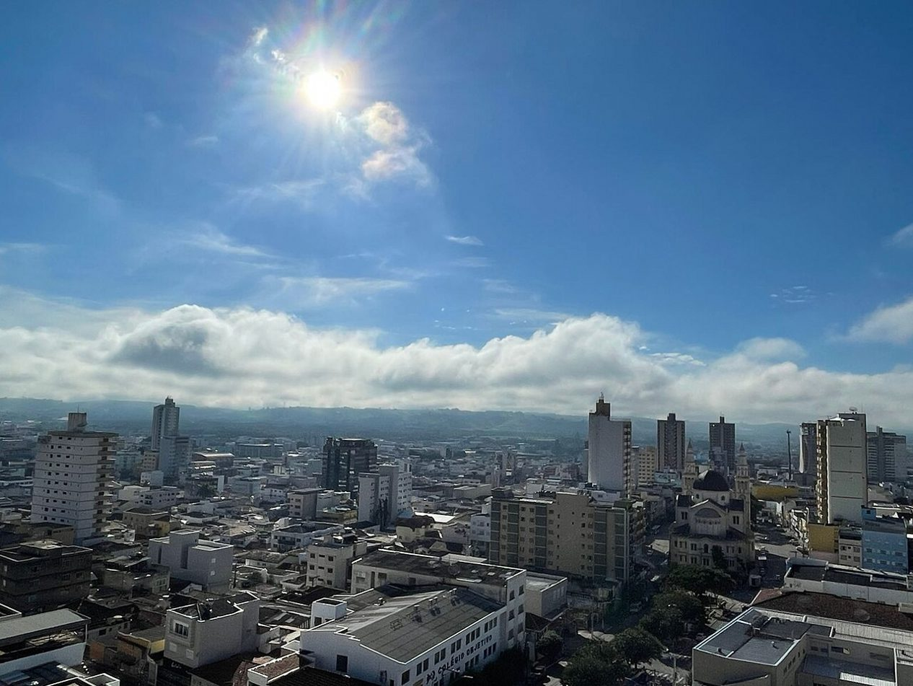

Em estruturação com a metodologia ELI do Sebrae Minas
Pouso Alegre ligando os pontos da inovação
O Ecossistema Local de Inovação reúne empresas, comércio e indústrias, universidades e ICTs, setor público e sociedade civil organizada para planejar juntos o futuro da inovação na cidade. Este site é o ponto de encontro do ELI enquanto ele ganha forma.
O que é um Ecossistema Local de Inovação
Olhe para o símbolo do ELI: cada ponto colorido é um ator (uma universidade, uma startup, a prefeitura, uma associação). Cada linha é uma conexão entre eles. Um ecossistema forte não é o que tem mais pontos, é o que tem mais linhas.
A metodologia ELI foi criada pelo Sebrae Paraná com a Fundação CERTI e levada para todo o país pelo Sebrae em 2020. Ela olha a cidade por vertentes, mede a maturidade de cada uma e transforma o diagnóstico num plano de ação com responsáveis. Em Pouso Alegre, a condução é da consultoria do Sebrae Minas.
As vertentes que a metodologia observa
- Ambientes de inovaçãoIncubadoras, aceleradoras, coworkings, espaços maker, centros de inovação, parques tecnológicos.
- Programas e açõesHackathons, editais, capacitações, mentorias, eventos que movimentam a rede.
- ICTIsInstituições de ciência, tecnologia e inovação: universidades, institutos, centros de pesquisa.
- Políticas públicasLeis, conselhos, fundos e programas municipais de inovação.
- CapitalInvestidores-anjo, fundos, crédito, editais de fomento.
- GovernançaQuem decide, como decide e como mantém o plano andando.
Em que etapa estamos
A metodologia segue uma sequência. Pouso Alegre está no começo, com os grupos de trabalho já formados.
- 1CaracterizaçãoQuem são os atores, o que já existe, quais setores puxam a economia.Estamos aqui
- 2MaturidadeMedir o quanto cada vertente já está desenvolvida.
- 3Pontos de intervençãoEscolher onde agir primeiro.
- 4Plano de intervençãoAções com dono, prazo e indicador.
- 5Atuação conjuntaOs atores executando o plano juntos.
- 6MonitoramentoAcompanhar, corrigir a rota e prestar contas.
Como nos organizamos
Três grupos de trabalho, cada um cuidando de vertentes da metodologia, e um Grupo de Governança com um representante de cada grupo.
A composição de cada grupo está em formação. Quer participar? Fale com a liderança do grupo pela governança do ELI.

Uma cidade com conhecimento instalado
Pouso Alegre tem 152.212 habitantes (Censo 2022), é a segunda maior cidade do Sul de Minas e fica entre São Paulo e Belo Horizonte. Reúne universidades, institutos e centros de pesquisa, indústria forte, comércio ativo e uma comunidade de startups em crescimento.
O ELI existe para que tudo isso trabalhe junto: que o estudante encontre o laboratório, que o laboratório encontre a empresa e que a empresa encontre o investidor.
Referências que nos inspiram
Não precisamos inventar tudo. Estes ecossistemas resolveram problemas parecidos com os nossos.
O ELI em números
Indicadores acompanhados pelos atores do ecossistema.
Próximos na agenda
Ver agenda completaEcossistema Local de Inovação de Pouso Alegre
Agenda Única da Inovação*
Um só calendário para todos os eventos, editais, capacitações e encontros de inovação e empreendedorismo de Pouso Alegre. Um painel único para o Ecossistema se organizar, cooperar e compartilhar suas ações.
Como a agenda funciona
- 1Crie sua contaCom Gmail ou e-mail e senha, e preencha o perfil da sua instituição.
- 2Cadastre o eventoO radar avisa se já existe outro evento no mesmo dia, para evitar choques.
- 3Ele entra na agenda na horaVocê pode editar ou excluir quando quiser. A curadoria só remove o que for indevido.
A agenda em números
- 0eventos na agenda
- 0organizadores diferentes
- 0datas com mais de um evento
Contadores calculados a partir da agenda, incluindo os eventos já realizados.
Quem faz parte
O Ecossistema é feito por todos e para todos.
Venha fazer parte.
Qualquer instituição, empresa ou pessoa que movimenta a inovação em Pouso Alegre pode contribuir. Um bom primeiro passo é colocar seus eventos na Agenda Única.
Algumas instituições que já participam
* A Agenda Única do ELI é uma iniciativa do Grupo 2 (Ambientes de Inovação, Programas e Ações).
Mapa vivo do Ecossistema
Programas e Ações
Projetos, programas, ações e serviços das instituições de Pouso Alegre, num só lugar. Cada ator cadastra e atualiza o que faz, e o mapa do Ecossistema se mantém vivo.
Programas e ações cadastrados

Quem faz o Ecossistema
Vitrine
As quatro hélices da inovação de Pouso Alegre. Escolha uma para conhecer os atores ativos e visitar o site de cada instituição.
As quatro hélices
O modelo das quatro hélices descreve a inovação como resultado da cooperação entre quem produz, quem pesquisa, quem governa e quem vive na cidade.
Minha conta
Entre para cadastrar sua instituição na Vitrine, publicar eventos na Agenda e mapear seus programas e ações.
O cadastro de usuários está sendo ativado. Volte em breve.
Minha conta
Confirme seu e-mail para publicar. Enviamos um link para . Depois de clicar no link, volte aqui e recarregue a página.
Novo evento
Ao escolher a data, o radar mostra se já existe algo marcado para o mesmo dia.
Escolha uma data para ver o radar.
Novo programa ou ação
Excluir minha conta
Apaga sua conta, o perfil da instituição, todos os seus eventos, programas e ações e o que você publicou na Área dos Atores. Não há como desfazer.
Acesso restrito
Área dos Atores
Espaço exclusivo dos atores do ELI: indicadores, relatórios, atas e anotações do ecossistema, sem precisar abrir o Drive.
O acesso é liberado pela coordenação do ELI. Entre com sua conta e faça o pedido.
O cadastro de usuários está sendo ativado. Volte em breve.
Área dos Atores
Carregando…
Acesso restrito
Área dos Atores
Peça acesso para ver os indicadores, relatórios, atas e anotações do ELI.
Confirme seu e-mail antes de pedir acesso. Use o link que enviamos quando você criou a conta e depois recarregue esta página.
Acesso restrito
Pedido enviado
Seu pedido de acesso à Área dos Atores está com a coordenação do ELI. Assim que for aprovado, esta página mostra os dados.
Área dos Atores
Seu pedido de acesso não foi aprovado.
Se acha que foi um engano, fale com a coordenação do ELI pelo WhatsApp do site e depois peça de novo.
Só para membros do ELI
Área dos Atores
O que estiver marcado como Público também aparece no site aberto. O resto só os membros veem.
Envie o arquivo .xlsx ou .csv exportado do Drive. Cada aba vira um quadro. Para atualizar, importe de novo o mesmo arquivo: os quadros com o mesmo nome de aba são substituídos e mantêm suas configurações.
Anotações dos membros
Pedidos aguardando
Membros com acesso
Pedidos recusados ou acessos removidos

Proposta inicial para validação do Grupo de Governança
Quem somos e como decidimos
O ELI Pouso Alegre não é uma nova instituição. É um acordo de trabalho entre instituições que já existem, para que façam juntas o que nenhuma faria sozinha.
Sobre nós
O Ecossistema Local de Inovação de Pouso Alegre começou a se organizar em 2026, com a metodologia ELI conduzida pela consultoria do Sebrae Minas. Reúne representantes do setor público, das instituições de ensino e pesquisa, das associações empresariais, de ambientes de inovação e de empresas da cidade.
Trabalhamos em três grupos temáticos e uma governança enxuta. O objetivo desta primeira fase é conhecer bem o ecossistema, escolher prioridades e entregar projetos que todos possam ver funcionando, como a Agenda Única.
Visão
Ser, até 2030, o ecossistema de inovação mais conectado do Sul de Minas: um lugar onde qualquer pessoa com uma ideia sabe a quem recorrer.
Missão
Conectar pessoas, instituições e recursos de Pouso Alegre para transformar conhecimento em negócios, empregos e qualidade de vida.
Princípios
- Toda ação tem dono e prazoCada iniciativa do plano tem um guardião, uma data e um indicador. Aprendido com o plano do ELI de Pato Branco.
- Portas abertasQualquer instituição ou pessoa que queira contribuir encontra um caminho para participar.
- Longo prazo, além de mandatosO ELI atravessa gestões públicas e diretorias. Maringá planeja assim desde 1996.
- Fazer junto antes de fazer novoPrimeiro conectar o que já existe, depois criar o que falta.
- Ritmo constanteEncontros regulares valem mais que um grande evento isolado.
- TransparênciaDecisões, atas e indicadores ficam públicos neste site.
Estrutura
| Instância | Quem compõe | O que faz | Ritmo |
|---|---|---|---|
| Grupo de Governança | Um representante de cada grupo de trabalho | Define prioridades, aprova o plano, resolve impasses e presta contas | Mensal |
| Grupos de trabalho | Instituições ligadas às vertentes de cada grupo | Executam as ações, cada uma com guardião, prazo e indicador | Quinzenal ou mensal |
| Consultoria Sebrae Minas | Equipe do programa ELI | Conduz a metodologia, o diagnóstico e o plano de intervenção | Conforme o cronograma |
| Secretaria executiva proposta | Uma instituição parceira, em rodízio | Atas, agenda, site e comunicação. Garante que a governança não vire só reunião | Contínuo |
| Plenária aberta proposta | Todos os atores do ecossistema | Prestação de contas e lançamento da agenda do período | Trimestral |
Como decidimos
- Buscamos consenso. Sem consenso, decide a maioria simples do Grupo de Governança.
- Toda decisão vira registro em ata, publicada neste site.
- Cada grupo tem autonomia para executar o que já foi aprovado no plano.
- Conflito de interesse se declara antes da discussão, não depois.
Quando alguém sai
- Representações têm mandato de um ano, renovável.
- Quem sai entrega a pasta: contatos, pendências e próximos passos, numa reunião de passagem.
- A instituição indica o substituto em até 30 dias.
Estas regras respondem a um risco que outros ecossistemas já viveram: a troca de pessoas apagar a memória do trabalho.
Primeiros 90 dias proposta
- Dezembro de 2026Validar a baseGovernança aprova visão, missão, princípios e estas regras. Formulário da agenda aberto aos organizadores.
- Janeiro de 2027Primeira agenda trimestralAgenda de fevereiro a abril publicada. Inventário dos ambientes de inovação iniciado.
- Fevereiro a março de 2027Plenária abertaApresentação do diagnóstico, dos grupos e dos primeiros indicadores para todo o ecossistema.
Documentos públicos
Relatórios e materiais que o ELI compartilha com toda a cidade.